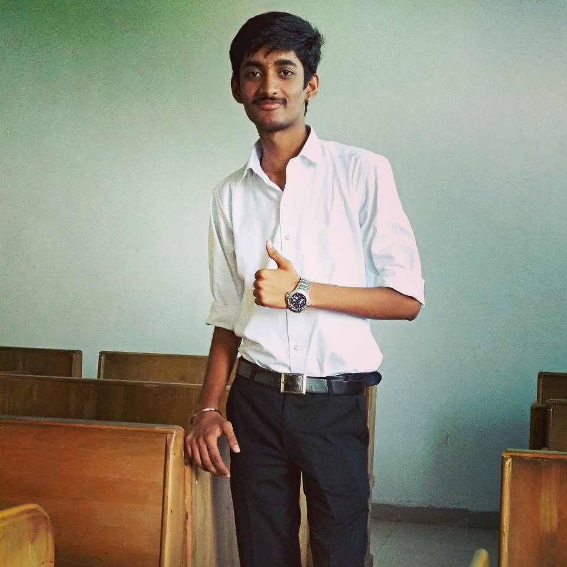

Pranav patki
Nahur, mumbai
Maharashtra

Profile
BE from Datta meghe college of engineering in 2022.
Education
Bachlear of engineering,
Graduating June 2022
Mumbai University
-
completed degree course with distinction.
Research Project
-
project of IOT(internet of things).Topic of project is sound detection in db
on a particular website.
Related Experience
Mumbai University
Leaderrship
-
IN whole acedemic year from various activities leading group of
team was an good experience.
-
Also managing them and various activities.
Intercolleges coding competetions
project head
-
paarticipating in various coding compettions.
-
Improved coding in python as well as php.
Extra curricular activities,
in 2020
culturer head and event management
-
As a culturer head and event management head learned
to manage things efficiently.
-
Formed friendships new people.